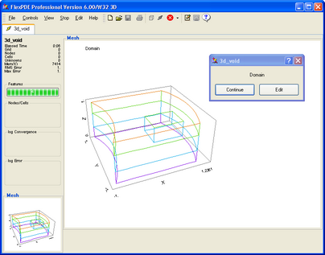
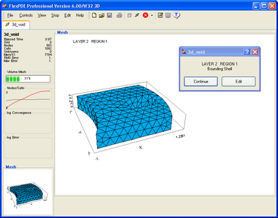

|
Domain Review |

  
|
|
Domain Review |
|
The "Domain Review" menu item is provided in the Controls menu as a way to validate your problem domain before continuing with the analysis.
2D Problems
When you click "Domain Review", the descriptor file will be saved to disk, and the domain construction phase will begin. FlexPDE will halt with a display of the domain boundaries specified in the descriptor. If these are as you intended, click "Continue". If they are not correct, click "Edit", and you will be returned to the edit phase to correct the domain definition. If you continue, the mesh generation process will be activated, and FlexPDE will halt again to display the final mesh. Again, you can continue or return to the editor.
3D Problems
The 3D domain review is more extensive. Echoing the mesh generation process used in FlexPDE, the review will halt after each of the following stages:
| • | A domain plot showing the boundaries of each extrusion surface and layer in order from lower to higher Z coordinate. The surface plots show the boundaries that exist in the surface. The layer plot shows the boundaries that extend through the layer and therefore form material compartments. If at any point you detect an error, you can click "Edit" to return to the editor and correct the error. |
| • | After the display of individual surfaces and layers, you will be presented a composite view of all the boundaries of the domain, which might look like this: |

| • | Once the domain boundaries are correct, FlexPDE will proceed to the generation of the 2D finite element mesh for each extrusion surface. These will be displayed in order from lower to upper surfaces. You can return to "Edit" after any surface. |
| • | Once the surface meshes are correct, FlexPDE will proceed to the generation of the 3D finite element mesh. Each subregion of the first layer will be displayed and meshed. When the layer is complete, the full layer will be displayed. When all layers are complete, the full 3D mesh will be displayed. You can return to "Edit" at any point. |
A 3D "Domain Review" plot might look like this:

Page url: index.html?domainreview.html